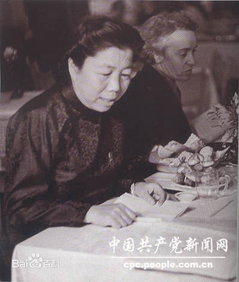
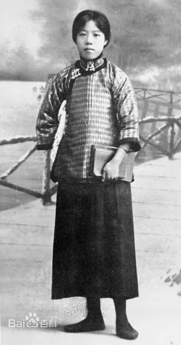
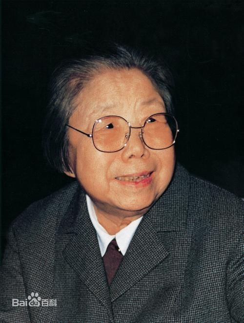
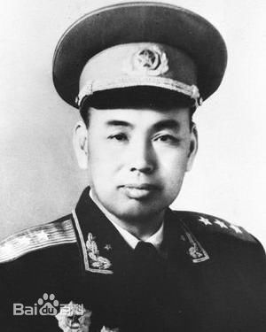
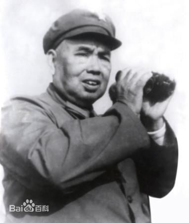
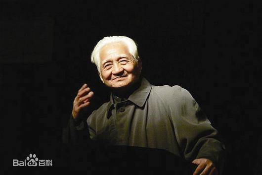
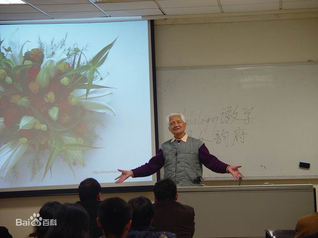

历史人物： 1.邓颖超  邓颖超同志是伟大的无产阶级革命家、政治家，著名社会活动家，坚定的马克思主义者，党和国家的卓越领导人，中国妇女运动的先驱。她在70多年的革命生涯中，为中国革命、建设和改革事业毫无保留地奉献了自己的一切。她是20世纪中国妇女的杰出代表，也是中国妇女的骄傲，在国内外享有崇高声誉，深受全党和全国人民的尊敬和爱戴。  许世友（1905年2月28日——1985年10月22日），出生于河南省信阳新县田铺乡河铺村许家洼。1955年许世友将军被授予上将军衔，并担任B" >中国人民解放军副总参谋长、司令员、广州军区司令员、国防部副部长，中共中央军委常委等。是第一、二、三届国防委员会委员，中国共产党第八届候补中央委员，第九、十、十一届中央政治局委员。在中国共产党中央顾问委员会第一次全体会议上被选为中央顾问委员会常务委员、副主任。  涂又光，男，河南光山人，1927年生，2012年11月4日凌晨2点逝世，享年86岁。著名哲学家、教育家，曾任华中科技大学教育科学研究院教授、博士生导师。在先秦儒学、楚国哲学史以及中国教育哲学研究上颇有建树，素以功力见长，著有《楚国哲学史》、《中国高等教育史论》、《文明本土化与大学》等学术论著。 |